1.11 從實踐到原理，帶你參透 gRPC

gRPC 在 Go 語言中大放異彩，越來越多的小夥伴在使用，最近也在公司安利了一波，希望這一篇文章能帶你一覽 gRPC 的巧妙之處，本文篇幅比較長，請做好閱讀準備。本文目錄如下：
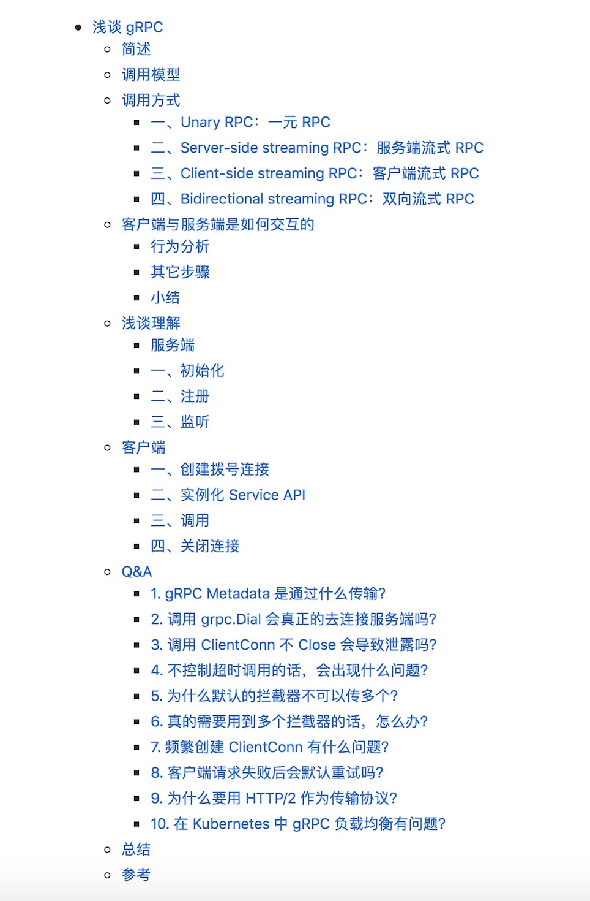
簡述
gRPC 是一個高效能、開源和通用的 RPC 框架，面向移動和 HTTP/2 設計。目前提供 C、Java 和 Go 語言版本，分別是：grpc, grpc-java, grpc-go. 其中 C 版本支援 C, C++, Node.js, Python, Ruby, Objective-C, PHP 和 C# 支援。
gRPC 基於 HTTP/2 標準設計，帶來諸如雙向流、流控、頭部壓縮、單 TCP 連線上的多複用請求等特性。這些特性使得其在移動裝置上表現更好，更省電和節省空間佔用。
呼叫模型
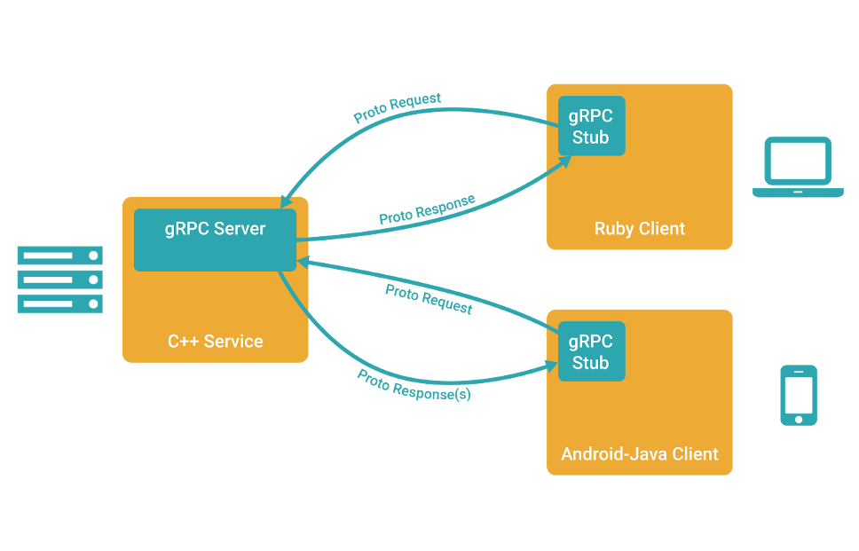
1、客戶端（gRPC Stub）呼叫 A 方法，發起 RPC 呼叫。
2、對請求資訊使用 Protobuf 進行物件序列化壓縮（IDL）。
3、服務端（gRPC Server）接收到請求後，解碼請求體，進行業務邏輯處理並返回。
4、對響應結果使用 Protobuf 進行物件序列化壓縮（IDL）。
5、客戶端接受到服務端響應，解碼請求體。回撥被呼叫的 A 方法，喚醒正在等待響應（阻塞）的客戶端呼叫並返回響應結果。
呼叫方式
一、Unary RPC：一元 RPC

Server
type SearchService struct{}
func (s *SearchService) Search(ctx context.Context, r *pb.SearchRequest) (*pb.SearchResponse, error) {
return &pb.SearchResponse{Response: r.GetRequest() + " Server"}, nil
}
const PORT = "9001"
func main() {
server := grpc.NewServer()
pb.RegisterSearchServiceServer(server, &SearchService{})
lis, err := net.Listen("tcp", ":"+PORT)
...
server.Serve(lis)
}
- 建立 gRPC Server 物件，你可以理解為它是 Server 端的抽象物件。
- 將 SearchService（其包含需要被呼叫的服務端介面）註冊到 gRPC Server。 的內部註冊中心。這樣可以在接受到請求時，透過內部的 “服務發現”，發現該服務端介面並轉接進行邏輯處理。
- 建立 Listen，監聽 TCP 埠。
- gRPC Server 開始 lis.Accept，直到 Stop 或 GracefulStop。
Client
func main() {
conn, err := grpc.Dial(":"+PORT, grpc.WithInsecure())
...
defer conn.Close()
client := pb.NewSearchServiceClient(conn)
resp, err := client.Search(context.Background(), &pb.SearchRequest{
Request: "gRPC",
})
...
}
- 建立與給定目標（服務端）的連線控制代碼。
- 建立 SearchService 的客戶端物件。
- 傳送 RPC 請求，等待同步響應，得到回撥後返回響應結果。
二、Server-side streaming RPC：服務端流式 RPC

Server
func (s *StreamService) List(r *pb.StreamRequest, stream pb.StreamService_ListServer) error {
for n := 0; n <= 6; n++ {
stream.Send(&pb.StreamResponse{
Pt: &pb.StreamPoint{
...
},
})
}
return nil
}
Client
func printLists(client pb.StreamServiceClient, r *pb.StreamRequest) error {
stream, err := client.List(context.Background(), r)
...
for {
resp, err := stream.Recv()
if err == io.EOF {
break
}
...
}
return nil
}
三、Client-side streaming RPC：客戶端流式 RPC

Server
func (s *StreamService) Record(stream pb.StreamService_RecordServer) error {
for {
r, err := stream.Recv()
if err == io.EOF {
return stream.SendAndClose(&pb.StreamResponse{Pt: &pb.StreamPoint{...}})
}
...
}
return nil
}
Client
func printRecord(client pb.StreamServiceClient, r *pb.StreamRequest) error {
stream, err := client.Record(context.Background())
...
for n := 0; n < 6; n++ {
stream.Send(r)
}
resp, err := stream.CloseAndRecv()
...
return nil
}
四、Bidirectional streaming RPC：雙向流式 RPC

Server
func (s *StreamService) Route(stream pb.StreamService_RouteServer) error {
for {
stream.Send(&pb.StreamResponse{...})
r, err := stream.Recv()
if err == io.EOF {
return nil
}
...
}
return nil
}
Client
func printRoute(client pb.StreamServiceClient, r *pb.StreamRequest) error {
stream, err := client.Route(context.Background())
...
for n := 0; n <= 6; n++ {
stream.Send(r)
resp, err := stream.Recv()
if err == io.EOF {
break
}
...
}
stream.CloseSend()
return nil
}
客戶端與服務端是如何互動的
在開始分析之前，我們要先 gRPC 的呼叫有一個初始印象。那麼最簡單的就是對 Client 端呼叫 Server 端進行抓包去剖析，看看整個過程中它都做了些什麼事。如下圖：
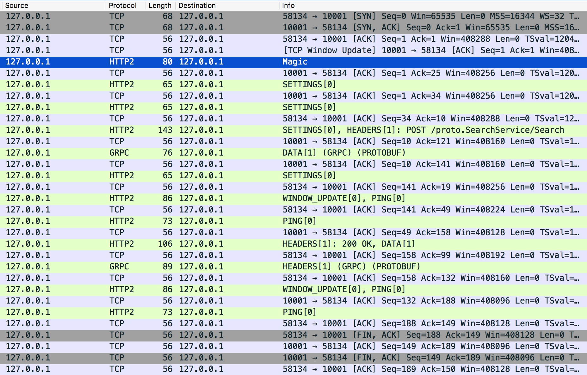
- Magic
- SETTINGS
- HEADERS
- DATA
- SETTINGS
- WINDOW_UPDATE
- PING
- HEADERS
- DATA
- HEADERS
- WINDOW_UPDATE
- PING
我們略加整理發現共有十二個行為，是比較重要的。在開始分析之前，建議你自己先想一下，它們的作用都是什麼？大膽猜測一下，帶著疑問去學習效果更佳。
行為分析
Magic
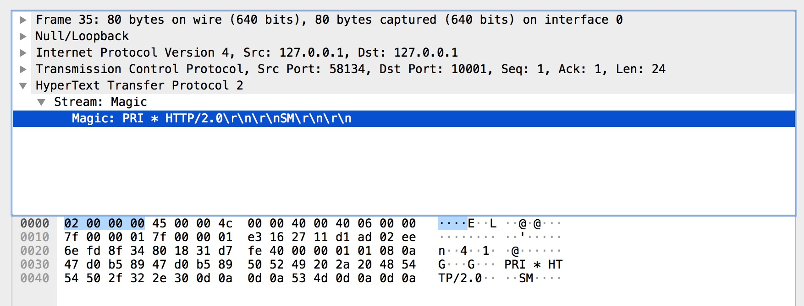
Magic 幀的主要作用是建立 HTTP/2 請求的前言。在 HTTP/2 中，要求兩端都要傳送一個連線前言，作為對所使用協議的最終確認，並確定 HTTP/2 連線的初始設定，客戶端和服務端各自發送不同的連線前言。
而上圖中的 Magic 幀是客戶端的前言之一，內容為 PRI * HTTP/2.0\r\n\r\nSM\r\n\r\n，以確定啟用 HTTP/2 連線。
SETTINGS
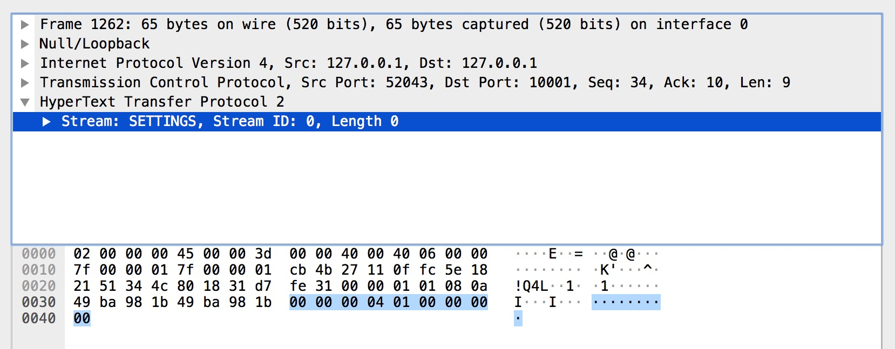
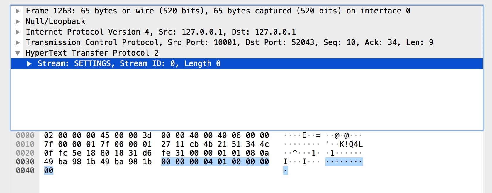
SETTINGS 幀的主要作用是設定這一個連線的引數，作用域是整個連線而並非單一的流。
而上圖的 SETTINGS 幀都是空 SETTINGS 幀，圖一是客戶端連線的前言（Magic 和 SETTINGS 幀分別組成連線前言）。圖二是服務端的。另外我們從圖中可以看到多個 SETTINGS 幀，這是為什麼呢？是因為傳送完連線前言後，客戶端和服務端還需要有一步互動確認的動作。對應的就是帶有 ACK 標識 SETTINGS 幀。
HEADERS
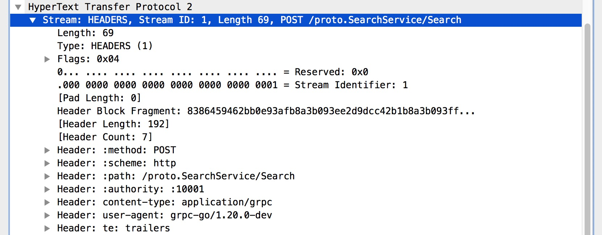
HEADERS 幀的主要作用是儲存和傳播 HTTP 的標頭資訊。我們關注到 HEADERS 裡有一些眼熟的資訊，分別如下：
- method：POST
- scheme：http
- path：/proto.SearchService/Search
- authority：:10001
- content-type：application/grpc
- user-agent：grpc-go/1.20.0-dev
你會發現這些東西非常眼熟，其實都是 gRPC 的基礎屬性，實際上遠遠不止這些，只是設定了多少展示多少。例如像平時常見的 grpc-timeout、grpc-encoding 也是在這裡設定的。
DATA
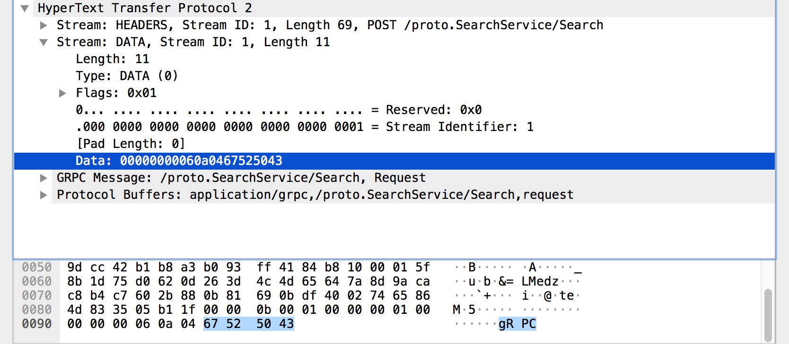
DATA 幀的主要作用是裝填主體資訊，是資料幀。而在上圖中，可以很明顯看到我們的請求引數 gRPC 儲存在裡面。只需要瞭解到這一點就可以了。
HEADERS, DATA, HEADERS
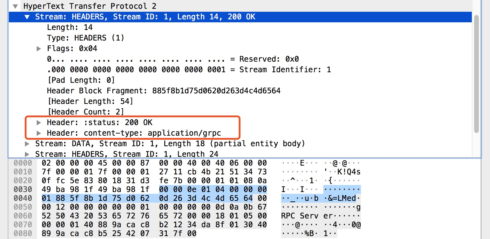
在上圖中 HEADERS 幀比較簡單，就是告訴我們 HTTP 響應狀態和響應的內容格式。
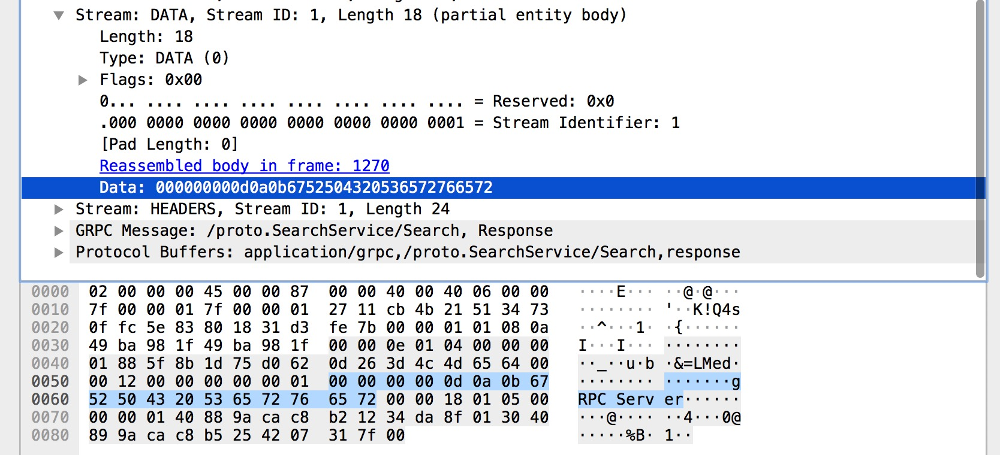
在上圖中 DATA 幀主要承載了響應結果的資料集，圖中的 gRPC Server 就是我們 RPC 方法的響應結果。
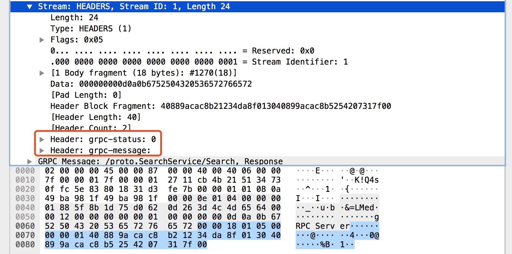
在上圖中 HEADERS 幀主要承載了 gRPC 狀態 和 gRPC 狀態訊息，圖中的 grpc-status 和 grpc-message 就是我們的 gRPC 呼叫狀態的結果。
其它步驟
WINDOW_UPDATE
主要作用是管理和流的視窗控制。通常情況下開啟一個連線後，伺服器和客戶端會立即交換 SETTINGS 幀來確定流控制視窗的大小。預設情況下，該大小設定為約 65 KB，但可透過發出一個 WINDOW_UPDATE 幀為流控制設定不同的大小。
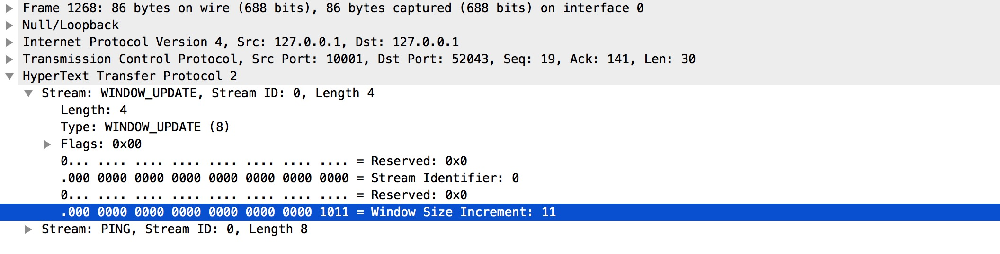
PING/PONG
主要作用是判斷當前連線是否仍然可用，也常用於計算往返時間。其實也就是 PING/PONG，大家對此應該很熟。
小結
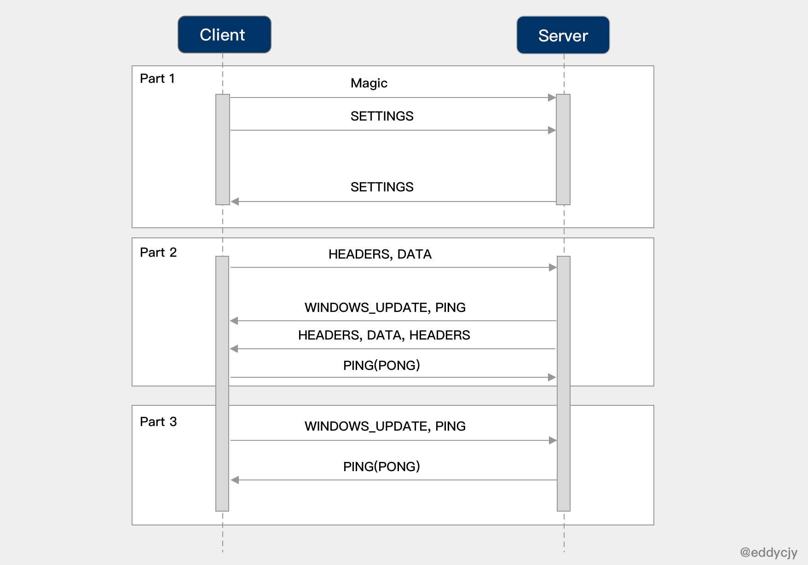
- 在建立連線之前，客戶端/服務端都會發送連線前言（Magic+SETTINGS），確立協議和設定項。
- 在傳輸資料時，是會涉及滑動視窗（WINDOW_UPDATE）等流控策略的。
- 傳播 gRPC 附加資訊時，是基於 HEADERS 幀進行傳播和設定；而具體的請求/響應資料是儲存的 DATA 幀中的。
- 請求/響應結果會分為 HTTP 和 gRPC 狀態響應兩種型別。
- 客戶端發起 PING，服務端就會回應 PONG，反之亦可。
這塊 gRPC 的基礎使用，你可以看看我另外的 《gRPC 入門系列》，相信對你一定有幫助。
淺談理解
服務端
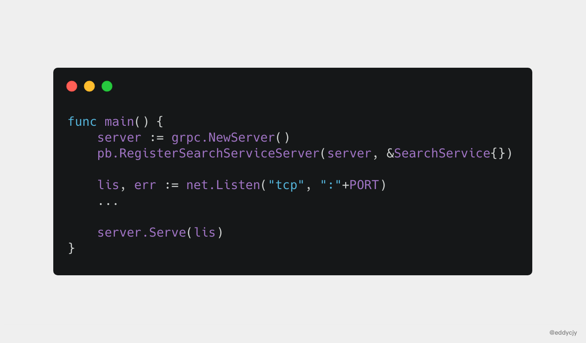
為什麼四行程式碼，就能夠起一個 gRPC Server，內部做了什麼邏輯。你有想過嗎？接下來我們一步步剖析，看看裡面到底是何方神聖。
一、初始化
// grpc.NewServer()
func NewServer(opt ...ServerOption) *Server {
opts := defaultServerOptions
for _, o := range opt {
o(&opts)
}
s := &Server{
lis: make(map[net.Listener]bool),
opts: opts,
conns: make(map[io.Closer]bool),
m: make(map[string]*service),
quit: make(chan struct{}),
done: make(chan struct{}),
czData: new(channelzData),
}
s.cv = sync.NewCond(&s.mu)
...
return s
}
這塊比較簡單，主要是例項 grpc.Server 並進行初始化動作。涉及如下：
- lis：監聽地址列表。
- opts：服務選項，這塊包含 Credentials、Interceptor 以及一些基礎設定。
- conns：客戶端連線控制代碼列表。
- m：服務資訊對映。
- quit：退出訊號。
- done：完成訊號。
- czData：用於儲存 ClientConn，addrConn 和 Server 的channelz 相關資料。
- cv：當優雅退出時，會等待這個訊號量，直到所有 RPC 請求都處理並斷開才會繼續處理。
二、註冊
pb.RegisterSearchServiceServer(server, &SearchService{})
步驟一：Service API interface
// search.pb.go
type SearchServiceServer interface {
Search(context.Context, *SearchRequest) (*SearchResponse, error)
}
func RegisterSearchServiceServer(s *grpc.Server, srv SearchServiceServer) {
s.RegisterService(&_SearchService_serviceDesc, srv)
}
還記得我們平時編寫的 Protobuf 嗎？在生成出來的 .pb.go 檔案中，會定義出 Service APIs interface 的具體實作約束。而我們在 gRPC Server 進行註冊時，會傳入應用 Service 的功能介面實作，此時生成的 RegisterServer 方法就會保證兩者之間的一致性。
步驟二：Service API IDL
你想亂傳糊弄一下？不可能的，請乖乖定義與 Protobuf 一致的介面方法。但是那個 &_SearchService_serviceDesc 又有什麼作用呢？程式碼如下：
// search.pb.go
var _SearchService_serviceDesc = grpc.ServiceDesc{
ServiceName: "proto.SearchService",
HandlerType: (*SearchServiceServer)(nil),
Methods: []grpc.MethodDesc{
{
MethodName: "Search",
Handler: _SearchService_Search_Handler,
},
},
Streams: []grpc.StreamDesc{},
Metadata: "search.proto",
}
這看上去像服務的描述程式碼，用來向內部表述 “我” 都有什麼。涉及如下:
- ServiceName：服務名稱
- HandlerType：服務介面，用於檢查使用者提供的實作是否滿足介面要求
- Methods：一元方法集，注意結構內的
Handler方法，其對應最終的 RPC 處理方法，在執行 RPC 方法的階段會使用。 - Streams：流式方法集
- Metadata：元資料，是一個描述資料屬性的東西。在這裡主要是描述
SearchServiceServer服務
步驟三：Register Service
func (s *Server) register(sd *ServiceDesc, ss interface{}) {
...
srv := &service{
server: ss,
md: make(map[string]*MethodDesc),
sd: make(map[string]*StreamDesc),
mdata: sd.Metadata,
}
for i := range sd.Methods {
d := &sd.Methods[i]
srv.md[d.MethodName] = d
}
for i := range sd.Streams {
...
}
s.m[sd.ServiceName] = srv
}
在最後一步中，我們會將先前的服務介面資訊、服務描述資訊給註冊到內部 service 去，以便於後續實際呼叫的使用。涉及如下：
- server：服務的介面資訊
- md：一元服務的 RPC 方法集
- sd：流式服務的 RPC 方法集
- mdata：metadata，元資料
小結
在這一章節中，主要介紹的是 gRPC Server 在啟動前的整理和註冊行為，看上去很簡單，但其實一切都是為了後續的實際執行的預先準備。因此我們整理一下思路，將其串聯起來看看，如下：
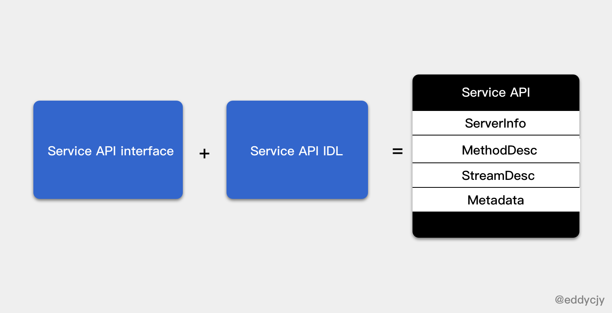
三、監聽
接下來到了整個流程中，最重要也是大家最關注的監聽/處理階段，核心程式碼如下：
func (s *Server) Serve(lis net.Listener) error {
...
var tempDelay time.Duration
for {
rawConn, err := lis.Accept()
if err != nil {
if ne, ok := err.(interface {
Temporary() bool
}); ok && ne.Temporary() {
if tempDelay == 0 {
tempDelay = 5 * time.Millisecond
} else {
tempDelay *= 2
}
if max := 1 * time.Second; tempDelay > max {
tempDelay = max
}
...
timer := time.NewTimer(tempDelay)
select {
case <-timer.C:
case <-s.quit:
timer.Stop()
return nil
}
continue
}
...
return err
}
tempDelay = 0
s.serveWG.Add(1)
go func() {
s.handleRawConn(rawConn)
s.serveWG.Done()
}()
}
}
Serve 會根據外部傳入的 Listener 不同而呼叫不同的監聽模式，這也是 net.Listener 的魅力，靈活性和擴充套件性會比較高。而在 gRPC Server 中最常用的就是 TCPConn，基於 TCP Listener 去做。接下來我們一起看看具體的處理邏輯，如下：
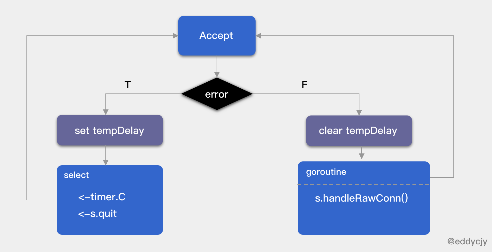
- 迴圈處理連線，透過
lis.Accept取出連線，如果佇列中沒有需處理的連線時，會形成阻塞等待。 - 若
lis.Accept失敗，則觸發休眠機制，若為第一次失敗那麼休眠 5ms，否則翻倍，再次失敗則不斷翻倍直至上限休眠時間 1s，而休眠完畢後就會嘗試去取下一個 “它”。 - 若
lis.Accept成功，則重置休眠的時間計數和啟動一個新的 goroutine 呼叫handleRawConn方法去執行/處理新的請求，也就是大家很喜歡說的 “每一個請求都是不同的 goroutine 在處理”。 - 在迴圈過程中，包含了 “退出” 服務的場景，主要是硬關閉和優雅重啟服務兩種情況。
客戶端
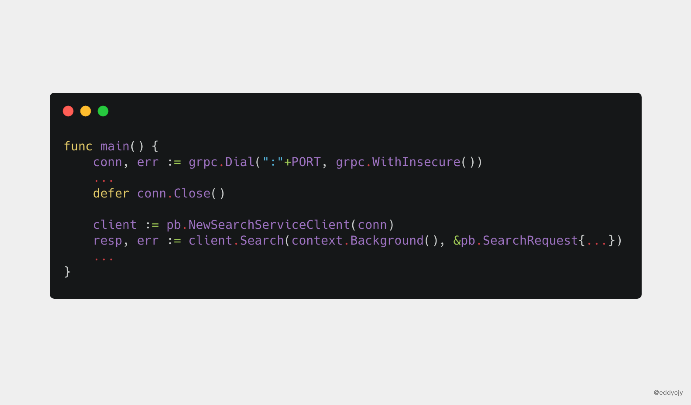
一、建立撥號連線
// grpc.Dial(":"+PORT, grpc.WithInsecure())
func DialContext(ctx context.Context, target string, opts ...DialOption) (conn *ClientConn, err error) {
cc := &ClientConn{
target: target,
csMgr: &connectivityStateManager{},
conns: make(map[*addrConn]struct{}),
dopts: defaultDialOptions(),
blockingpicker: newPickerWrapper(),
czData: new(channelzData),
firstResolveEvent: grpcsync.NewEvent(),
}
...
chainUnaryClientInterceptors(cc)
chainStreamClientInterceptors(cc)
...
}
grpc.Dial 方法實際上是對於 grpc.DialContext 的封裝，區別在於 ctx 是直接傳入 context.Background。其主要功能是建立與給定目標的客戶端連線，其承擔了以下職責：
- 初始化 ClientConn
- 初始化（基於程序 LB）負載均衡設定
- 初始化 channelz
- 初始化重試規則和客戶端一元/流式攔截器
- 初始化協議棧上的基礎資訊
- 相關 context 的超時控制
- 初始化並解析地址資訊
- 建立與服務端之間的連線
連沒連
之前聽到有的人說呼叫 grpc.Dial 後客戶端就已經與服務端建立起了連線，但這對不對呢？我們先鳥瞰全貌，看看正在跑的 goroutine。如下：
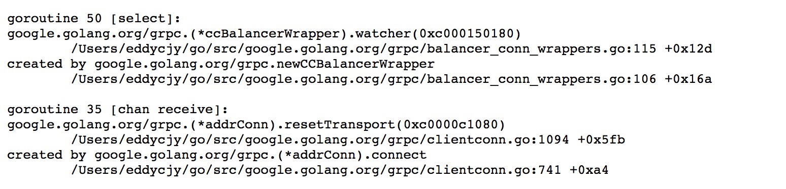
我們可以有幾個核心方法一直在等待/處理訊號，透過分析底層原始碼可得知。涉及如下：
func (ac *addrConn) connect()
func (ac *addrConn) resetTransport()
func (ac *addrConn) createTransport(addr resolver.Address, copts transport.ConnectOptions, connectDeadline time.Time)
func (ac *addrConn) getReadyTransport()
在這裡主要分析 goroutine 提示的 resetTransport 方法，看看都做了啥。核心程式碼如下：
func (ac *addrConn) resetTransport() {
for i := 0; ; i++ {
if ac.state == connectivity.Shutdown {
return
}
...
connectDeadline := time.Now().Add(dialDuration)
ac.updateConnectivityState(connectivity.Connecting)
newTr, addr, reconnect, err := ac.tryAllAddrs(addrs, connectDeadline)
if err != nil {
if ac.state == connectivity.Shutdown {
return
}
ac.updateConnectivityState(connectivity.TransientFailure)
timer := time.NewTimer(backoffFor)
select {
case <-timer.C:
...
}
continue
}
if ac.state == connectivity.Shutdown {
newTr.Close()
return
}
...
if !healthcheckManagingState {
ac.updateConnectivityState(connectivity.Ready)
}
...
if ac.state == connectivity.Shutdown {
return
}
ac.updateConnectivityState(connectivity.TransientFailure)
}
}
在該方法中會不斷地去嘗試建立連線，若成功則結束。否則不斷地根據 Backoff 演算法的重試機制去嘗試建立連線，直到成功為止。從結論上來講，單純呼叫 DialContext 是非同步建立連線的，也就是並不是馬上生效，處於 Connecting 狀態，而正式下要到達 Ready 狀態才可用。
真的連了嗎
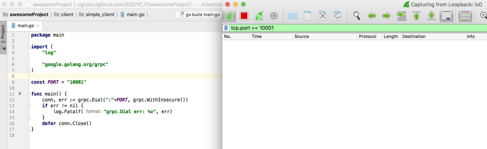
在抓包工具上提示一個包都沒有，那麼這算真正連線了嗎？我認為這是一個表述問題，我們應該儘可能的嚴謹。如果你真的想透過 DialContext 方法就打通與服務端的連線，則需要呼叫 WithBlock 方法，雖然會導致阻塞等待，但最終連線會到達 Ready 狀態（握手成功）。如下圖：
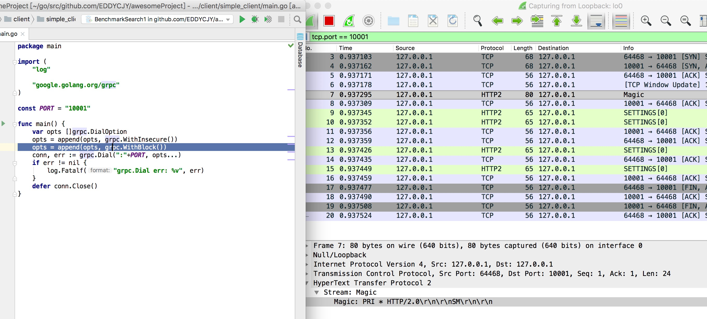
二、例項化 Service API
type SearchServiceClient interface {
Search(ctx context.Context, in *SearchRequest, opts ...grpc.CallOption) (*SearchResponse, error)
}
type searchServiceClient struct {
cc *grpc.ClientConn
}
func NewSearchServiceClient(cc *grpc.ClientConn) SearchServiceClient {
return &searchServiceClient{cc}
}
這塊就是例項 Service API interface，比較簡單。
三、呼叫
// search.pb.go
func (c *searchServiceClient) Search(ctx context.Context, in *SearchRequest, opts ...grpc.CallOption) (*SearchResponse, error) {
out := new(SearchResponse)
err := c.cc.Invoke(ctx, "/proto.SearchService/Search", in, out, opts...)
if err != nil {
return nil, err
}
return out, nil
}
proto 生成的 RPC 方法更像是一個包裝盒，把需要的東西放進去，而實際上呼叫的還是 grpc.invoke 方法。如下：
func invoke(ctx context.Context, method string, req, reply interface{}, cc *ClientConn, opts ...CallOption) error {
cs, err := newClientStream(ctx, unaryStreamDesc, cc, method, opts...)
if err != nil {
return err
}
if err := cs.SendMsg(req); err != nil {
return err
}
return cs.RecvMsg(reply)
}
透過概覽，可以關注到三塊呼叫。如下：
- newClientStream：取得傳輸層 Trasport 並組合封裝到 ClientStream 中返回，在這塊會涉及負載均衡、超時控制、 Encoding、 Stream 的動作，與服務端基本一致的行為。
- cs.SendMsg：傳送 RPC 請求出去，但其並不承擔等待響應的功能。
- cs.RecvMsg：阻塞等待接受到的 RPC 方法響應結果。
連線
// clientconn.go
func (cc *ClientConn) getTransport(ctx context.Context, failfast bool, method string) (transport.ClientTransport, func(balancer.DoneInfo), error) {
t, done, err := cc.blockingpicker.pick(ctx, failfast, balancer.PickOptions{
FullMethodName: method,
})
if err != nil {
return nil, nil, toRPCErr(err)
}
return t, done, nil
}
在 newClientStream 方法中，我們透過 getTransport 方法取得了 Transport 層中抽象出來的 ClientTransport 和 ServerTransport，實際上就是取得一個連線給後續 RPC 呼叫傳輸使用。
四、關閉連線
// conn.Close()
func (cc *ClientConn) Close() error {
defer cc.cancel()
...
cc.csMgr.updateState(connectivity.Shutdown)
...
cc.blockingpicker.close()
if rWrapper != nil {
rWrapper.close()
}
if bWrapper != nil {
bWrapper.close()
}
for ac := range conns {
ac.tearDown(ErrClientConnClosing)
}
if channelz.IsOn() {
...
channelz.AddTraceEvent(cc.channelzID, ted)
channelz.RemoveEntry(cc.channelzID)
}
return nil
}
該方法會取消 ClientConn 上下文，同時關閉所有底層傳輸。涉及如下：
- Context Cancel
- 清空並關閉客戶端連線
- 清空並關閉解析器連線
- 清空並關閉負載均衡連線
- 新增跟蹤引用
- 移除當前通道資訊
Q&A
1. gRPC Metadata 是透過什麼傳輸？
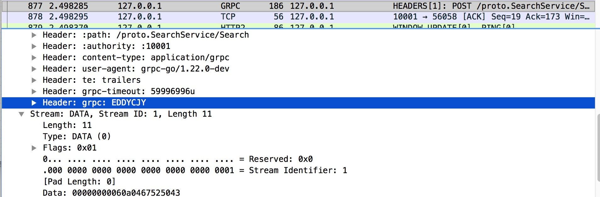
2. 呼叫 grpc.Dial 會真正的去連線服務端嗎？
會，但是是非同步連線的，連線狀態為正在連線。但如果你設定了 grpc.WithBlock 選項，就會阻塞等待（等待握手成功）。另外你需要注意，當未設定 grpc.WithBlock 時，ctx 超時控制對其無任何效果。
3. 呼叫 ClientConn 不 Close 會導致洩露嗎？
會，除非你的客戶端不是常駐程序，那麼在應用結束時會被動地回收資源。但如果是常駐程序，你又真的忘記執行 Close 語句，會造成的洩露。如下圖：
3.1. 客戶端
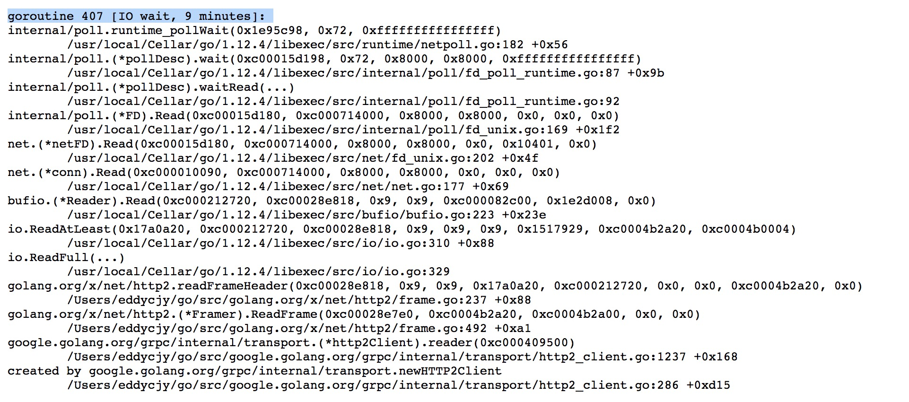
3.2. 服務端
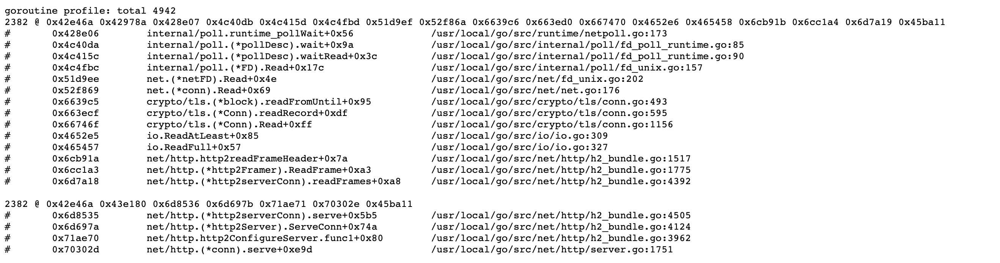
3.3. TCP
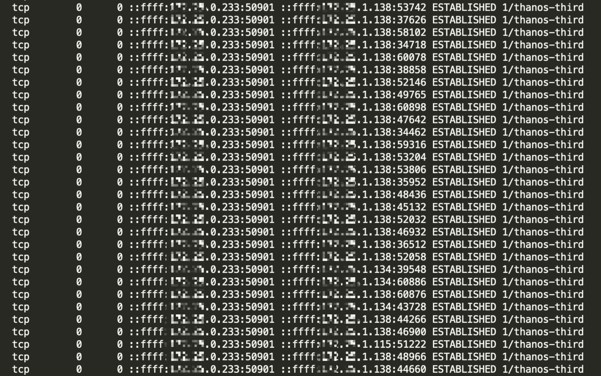
4. 不控制超時呼叫的話，會出現什麼問題？
短時間內不會出現問題，但是會不斷積蓄洩露，積蓄到最後當然就是服務無法提供響應了。如下圖：
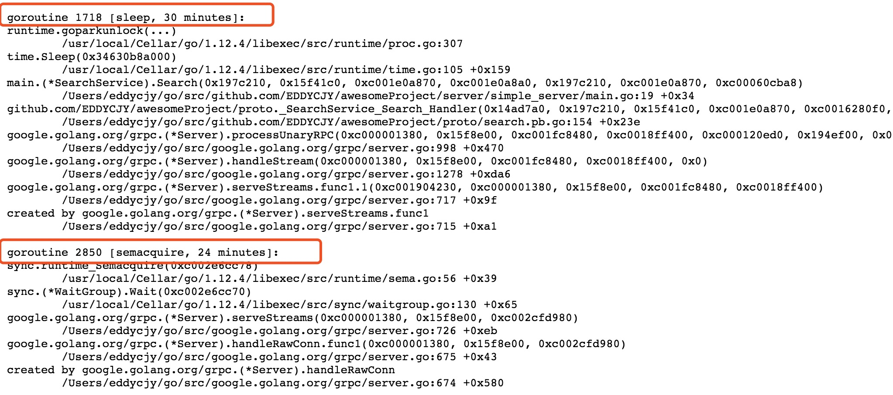
5. 為什麼預設的攔截器不可以傳多個？
func chainUnaryClientInterceptors(cc *ClientConn) {
interceptors := cc.dopts.chainUnaryInts
if cc.dopts.unaryInt != nil {
interceptors = append([]UnaryClientInterceptor{cc.dopts.unaryInt}, interceptors...)
}
var chainedInt UnaryClientInterceptor
if len(interceptors) == 0 {
chainedInt = nil
} else if len(interceptors) == 1 {
chainedInt = interceptors[0]
} else {
chainedInt = func(ctx context.Context, method string, req, reply interface{}, cc *ClientConn, invoker UnaryInvoker, opts ...CallOption) error {
return interceptors[0](ctx, method, req, reply, cc, getChainUnaryInvoker(interceptors, 0, invoker), opts...)
}
}
cc.dopts.unaryInt = chainedInt
}
當存在多個攔截器時，取的就是第一個攔截器。因此結論是允許傳多個，但並沒有用。
6. 真的需要用到多個攔截器的話，怎麼辦？
可以使用 go-grpc-middleware 提供的 grpc.UnaryInterceptor 和 grpc.StreamInterceptor 鏈式方法，方便快捷省心。
單單會用還不行，我們再深剖一下，看看它是怎麼實作的。核心程式碼如下：
func ChainUnaryClient(interceptors ...grpc.UnaryClientInterceptor) grpc.UnaryClientInterceptor {
n := len(interceptors)
if n > 1 {
lastI := n - 1
return func(ctx context.Context, method string, req, reply interface{}, cc *grpc.ClientConn, invoker grpc.UnaryInvoker, opts ...grpc.CallOption) error {
var (
chainHandler grpc.UnaryInvoker
curI int
)
chainHandler = func(currentCtx context.Context, currentMethod string, currentReq, currentRepl interface{}, currentConn *grpc.ClientConn, currentOpts ...grpc.CallOption) error {
if curI == lastI {
return invoker(currentCtx, currentMethod, currentReq, currentRepl, currentConn, currentOpts...)
}
curI++
err := interceptors[curI](currentCtx, currentMethod, currentReq, currentRepl, currentConn, chainHandler, currentOpts...)
curI--
return err
}
return interceptors[0](ctx, method, req, reply, cc, chainHandler, opts...)
}
}
...
}
當攔截器數量大於 1 時，從 interceptors[1] 開始遞迴，每一個遞迴的攔截器 interceptors[i] 會不斷地執行，最後才真正的去執行 handler 方法。同時也經常有人會問攔截器的執行順序是什麼，透過這段程式碼你得出結論了嗎？
7. 頻繁建立 ClientConn 有什麼問題？
這個問題我們可以反向驗證一下，假設不公用 ClientConn 看看會怎麼樣？如下:
func BenchmarkSearch(b *testing.B) {
for i := 0; i < b.N; i++ {
conn, err := GetClientConn()
if err != nil {
b.Errorf("GetClientConn err: %v", err)
}
_, err = Search(context.Background(), conn)
if err != nil {
b.Errorf("Search err: %v", err)
}
}
}
輸出結果：
... connection error: desc = "transport: Error while dialing dial tcp :10001: socket: too many open files"
... connection error: desc = "transport: Error while dialing dial tcp :10001: socket: too many open files"
... connection error: desc = "transport: Error while dialing dial tcp :10001: socket: too many open files"
... connection error: desc = "transport: Error while dialing dial tcp :10001: socket: too many open files"
FAIL
exit status 1
當你的應用場景是存在高頻次同時生成/呼叫 ClientConn 時，可能會導致系統的檔案控制代碼佔用過多。這種情況下你可以變更應用程式生成/呼叫 ClientConn 的模式，又或是池化它，這塊可以參考 grpc-go-pool 專案。
8. 客戶端請求失敗後會預設重試嗎？
會不斷地進行重試，直到上下文取消。而重試時間方面採用 backoff 演算法作為的重連機制，預設的最大重試時間間隔是 120s。
9. 為什麼要用 HTTP/2 作為傳輸協議？
許多客戶端要透過 HTTP 代理來訪問網路，gRPC 全部用 HTTP/2 實作，等到代理開始支援 HTTP/2 就能透明轉發 gRPC 的資料。不光如此，負責負載均衡、訪問控制等等的反向代理都能無縫相容 gRPC，比起自己設計 wire protocol 的 Thrift，這樣做科學不少。@ctiller @滕亦飛
10. 在 Kubernetes 中 gRPC 負載均衡有問題？
gRPC 的 RPC 協議是基於 HTTP/2 標準實作的，HTTP/2 的一大特性就是不需要像 HTTP/1.1 一樣，每次發出請求都要重新建立一個新連線，而是會複用原有的連線。
所以這將導致 kube-proxy 只有在連線建立時才會做負載均衡，而在這之後的每一次 RPC 請求都會利用原本的連線，那麼實際上後續的每一次的 RPC 請求都跑到了同一個地方。
注：使用 k8s service 做負載均衡的情況下
總結
- gRPC 基於 HTTP/2 + Protobuf。
- gRPC 有四種呼叫方式，分別是一元、服務端/客戶端流式、雙向流式。
- gRPC 的附加資訊都會體現在 HEADERS 幀，資料在 DATA 幀上。
- Client 請求若使用 grpc.Dial 預設是非同步建立連線，當時狀態為 Connecting。
- Client 請求若需要同步則呼叫 WithBlock()，完成狀態為 Ready。
- Server 監聽是迴圈等待連線，若沒有則休眠，最大休眠時間 1s；若接收到新請求則起一個新的 goroutine 去處理。
- grpc.ClientConn 不關閉連線，會導致 goroutine 和 Memory 等洩露。
- 任何內/外呼叫如果不加超時控制，會出現洩漏和客戶端不斷重試。
- 特定場景下，如果不對 grpc.ClientConn 加以調控，會影響呼叫。
- 攔截器如果不用 go-grpc-middleware 鏈式處理，會覆蓋。
- 在選擇 gRPC 的負載均衡模式時，需要謹慎。